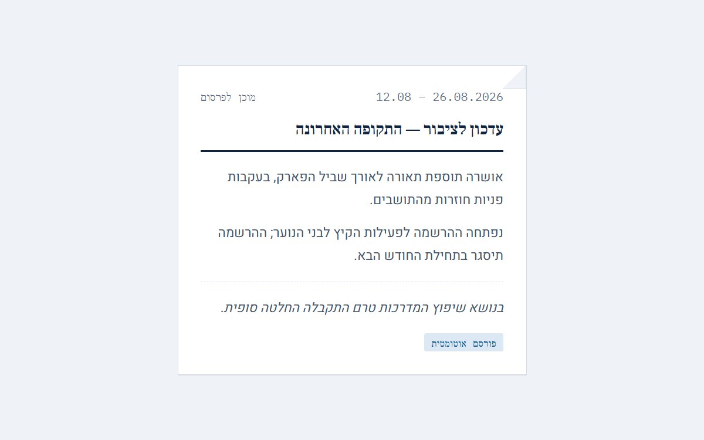
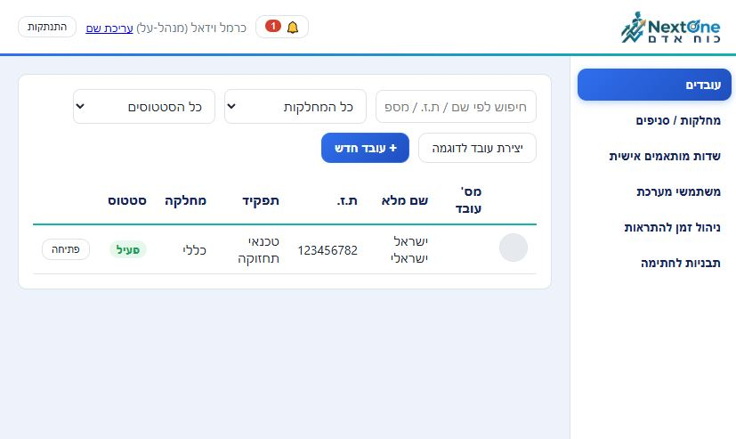
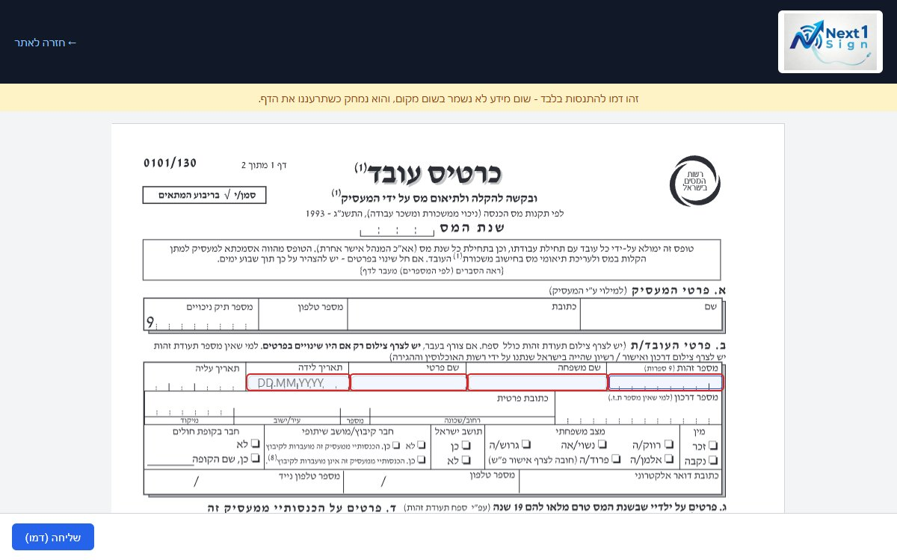
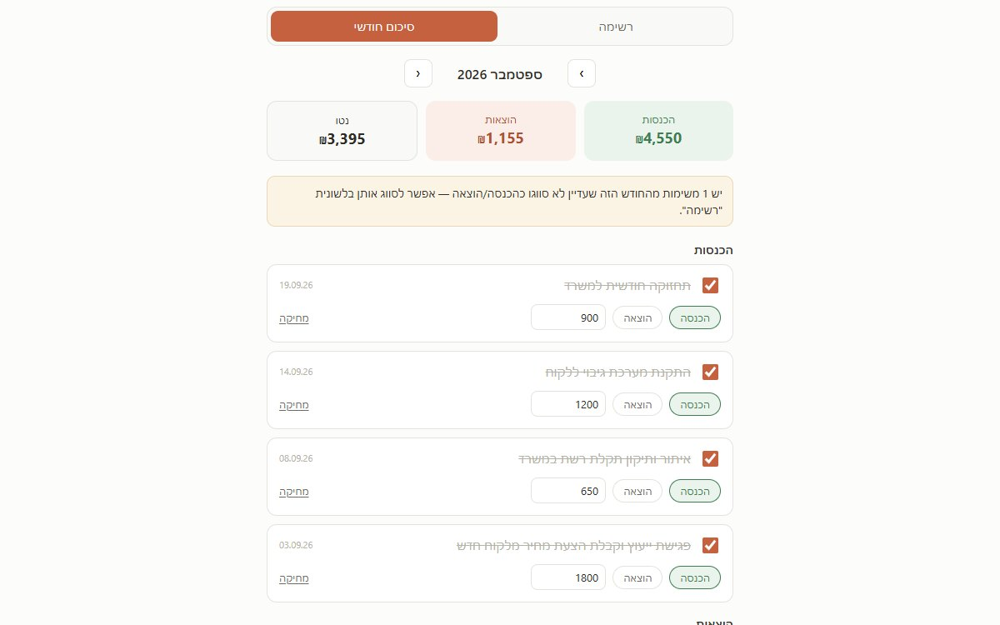
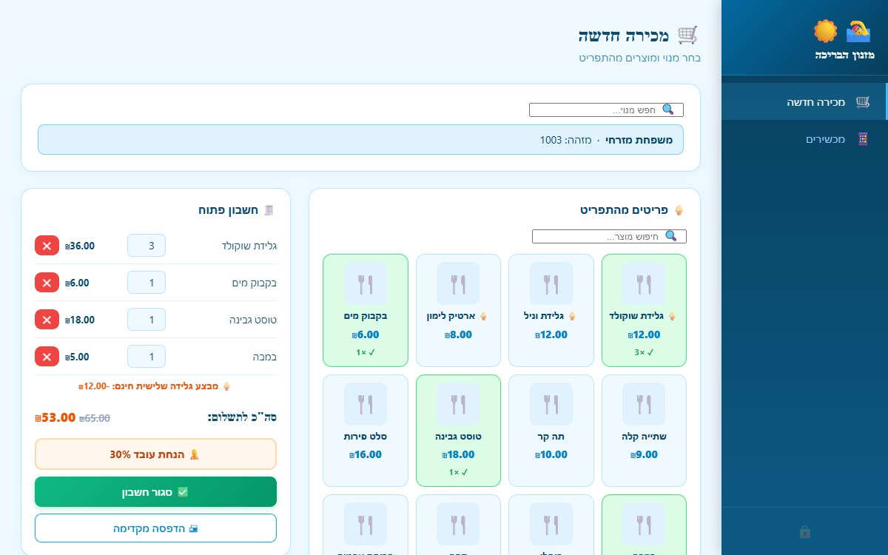

מערכות שנבנות סביב תהליך עבודה אחד — לא סביב תבנית כללית
שש דוגמאות מהעבודה האחרונה: ניהול כוח אדם, חתימה דיגיטלית על מסמכים, יומן פגישות משותף, קופה ומכירות למזנון בריכה, ניהול זמן והכנסות, ועדכונים תקופתיים לציבור. אם יש לך תהליך שגוזל זמן בגיליונות, בקבוצות וואטסאפ או בניירת פיזית — כנראה שאפשר לבנות לו כלי דומה.
מה שנבנה עד עכשיו
כל אחת מהמערכות האלה פותרת בעיה תפעולית אחת, לא "עוד כלי כללי". לחיצה על שם המערכת פותחת אותה בפועל.
סיכום תקופתי
עדכון מסודר לציבור על כל מה שקרה בתקופה — אוטומטית בקצב קבוע, או בלחיצת כפתור.

HR-Manager
תיקי עובדים, הכשרות ותזכורות, ובקשות חתימה דיגיטלית על מסמכי כוח אדם — בפורטל אחד למנהל ולעובד.

PDFSign
מילוי וחתימה דיגיטלית על קובצי PDF, כולל מצב רב-משתמשים וכמה חותמים על אותו מסמך.

יומן פגישות משותף
יומן פגישות למספר עובדים או חדרים במקביל, עם פרטי לקוח לכל פגישה, שליחת תזכורת בוואטסאפ ללקוח בלחיצת כפתור, וסל מיחזור לפעולות שבוטלו בטעות.

TimeLedger
רישום משימות יומי שהופך אוטומטית לדוח הכנסות והוצאות חודשי — בלי טבלת אקסל שצריך לעדכן ידנית.

מזנון בריכה
מכירה בלחיצה מהתפריט, חשבון פתוח לכל מנוי, ומלאי והכנסות שמתעדכנים לבד — קופה שעובדת מכמה מכשירים, גם כשאין אינטרנט.

איך זה מתחיל
שיחת היכרות
מבינים את התהליך הקיים כמו שהוא היום, ואיפה בדיוק הוא נתקע או גוזל זמן.
גרסה עובדת, לא מוקאפ
בנייה מהירה של גרסה ראשונה שאפשר לבדוק בפועל, על נתונים אמיתיים — לא הדמיה.
מסירה ותמיכה
המערכת עוברת לשימוש בפועל, עם תמיכה שוטפת אחרי המסירה כשמשהו צריך להשתנות.
יש לך תהליך שגוזל זמן?
ספר לי עליו בשיחה קצרה — נבין ביחד אם יש טעם לבנות לו כלי, ואיך זה יכול להיראות.